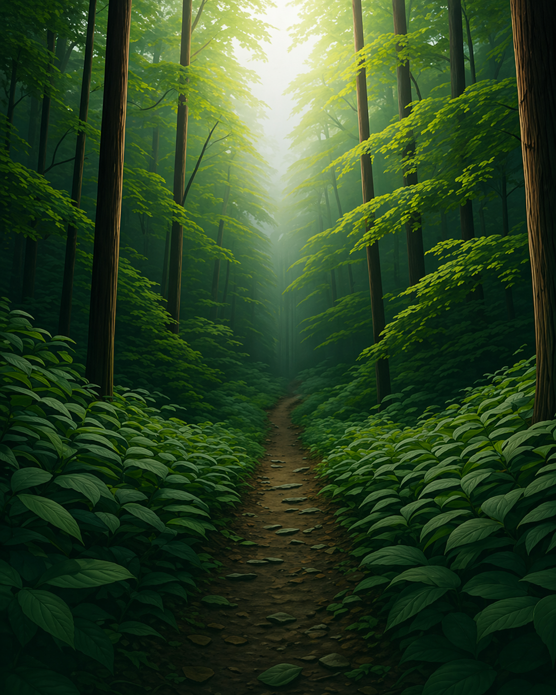

PAINEL DE AÇÕES
Pequenos Passos,
Pequenos Passos,
Impacto Vivo.
Suas escolhas diárias nutrem o ecossistema global. Cada ação abaixo contribui para sua pontuação pessoal de sustentabilidade e para a restauração ambiental.
Missões de Hoje
+450 XP Hoje
Economizar água
Reduza o tempo de banho para 5 min.
WATER SAVER
+50
POINTS
Reciclar lixo
Separe plásticos, papel e metal.
CIRCULAR ECONOMY
+120
POINTS
Usar transporte público
Vá de ônibus, trem ou bike hoje.
CARBON FREE
+200
POINTS
Plante uma Árvore
Chegue ao Nível 10 para patrocinar um plantio real.
Meta da Comunidade
Salvamos 4.200 litros de água juntos esta semana.
70%
META DIÁRIA
Seu Ambiente
🌲
Qualidade do Ar
+12%
Carbono Compensado
2.4 kg
Conquistas

IMPACTO GLOBAL
Veja como usuários EcoTrack ajudaram a restaurar a Bacia Amazônica.